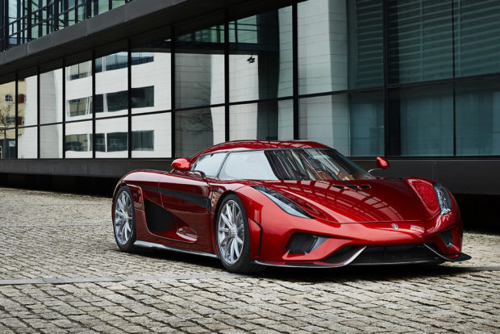
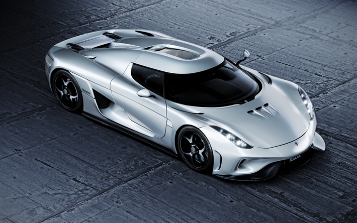
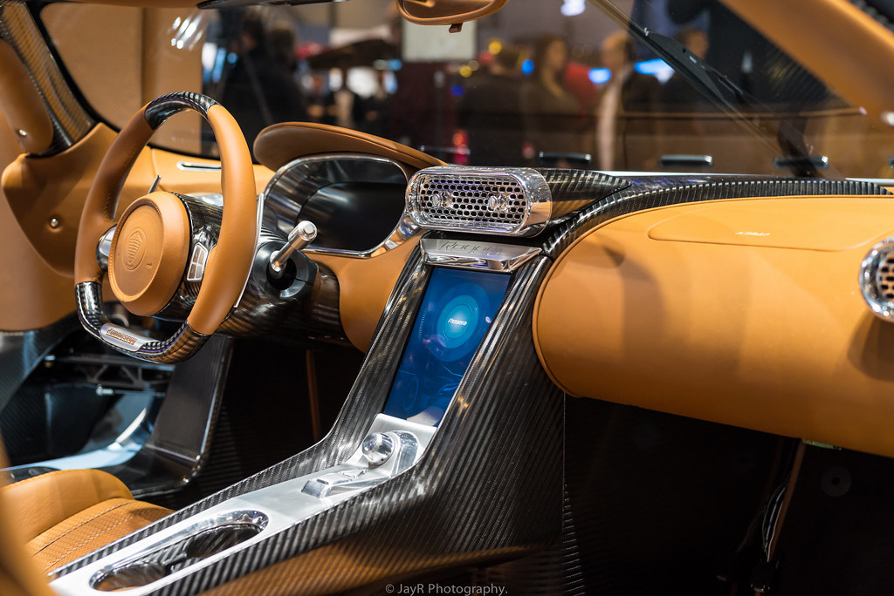

 The Koenigsegg Regera combines a powerful twin-turbo V8 combustion engine with three electric motors and cutting edge battery power via new powertrain technology called Koenigsegg Direct Drive. This revolutionary technology removes the traditional gearbox, making the car lighter and more efficient. Koenigsegg Regera is specifically designed to be a luxury Megacar alternative to Koenigsegg’s traditional extreme, light weight, race-like road cars. The Regera has a custom designed, tuned titanium exhaust system developed in conjunction with exhaust specialists and partners, Akrapovic. This unique exhaust system includes a fish tail outlet, designed by Christian, a design that has not been seen on production cars for at least half a century – bringing back the sound of performance cars from the past!
 While traditional Koenigseggs have always had surprising levels of practicality, creature comforts and features, our primary focus has always been to make the fastest cars on the planet – around a racetrack or anywhere else. The Koenigsegg Regera continues this tradition, but with innovative technology that blends outrageous speed, supreme comfort, and a unique Direct Drive experience. The heart and soul of every Koenigsegg is its Internal Combustion Engine – the ICE. The ICE of the Regera follows the path of its siblings, the proven and extremely reliable Koenigsegg dry-sump twin turbo, DOHC, 5.0 liter V8.
 The Direct Drive transmission of the Regera delivers blistering performance, while at the same time offering one of the smoothest, most soothing driving experiences imaginable. It is a true Jekyll and Hyde experience that depends completely on your mood. Koenigsegg has managed to robotize the entire Regera with almost no weight penalty, thanks to the latest advances in compact lightweight hydraulic technology. The Regera features functions such as active front and rear wings, chassis control and lifting system as standard, so the hydraulic pumps and accumulators were already in place to implement automation of our doors and front/rear hoods. The Autoskin hydraulics replace gas struts of similar weight, resulting in minimal weight impact.
Copyright © Sertan Mangan 2020